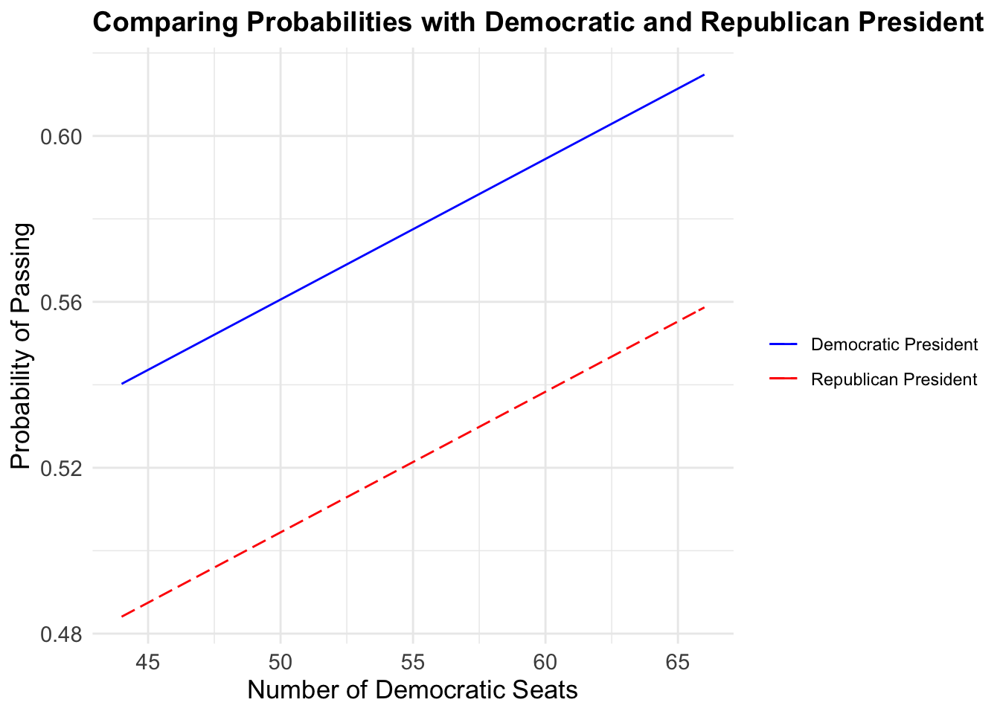

This my Data Viz Final.
small project showing why SASCA should pass.

Do you know how far the closest hospital to you that you should go to if you’ve been sexually assaulted?
You may hope that it’s just your nearest hospital. Unfortunately, it’s most likely not. The majority of hospitals do not have the appropriate care in place for a sexual assault survivor. A sexual assault nurse examiner (SANE) -a particular type of sexual assault forensic examiners—are registered nurses, including nurse midwives and other advanced practice nurses, who have received specialized education and have fulfilled clinical requirements to perform sexual assault forensic exams.
According to a GAO study1, “coalition officials in Wisconsin told us that nearly half of all counties in the state do not have any examiner programs available, and coalition officials in Nebraska told us that most counties in the state do not have examiner programs available.”
Hospitals in urban areas are more likely to have SANE exams, but in the rural Western region of Colorado, for example, victims may have to travel more than an hour to reach a facility with examiners available. In general, state Service-Training-Officers-Prosecutors (STOP) administrators and coalition officials explained that it could take a victim 30 minutes or less in urban areas to up to 2 hours in rural areas to reach a facility that has an examiner available. 2
In Milwaukee WI, only 1 out of the 5 major hospitals has examiners. In Washington D.C., only 1 out of the 16 medical centers have examiners.
Use the below map to see how many locations there are in your state! This information is from here. This is supposed to be a snapshot in time, to show where SANE providers are. There are some states that are blank- those are states where there is not a listing easily found of SANE providers.
This is not a resource for survivors. If you are a survivor, please know that I believe you, and call RAINN, and they will direct you to your local rape crisis center. Your local rape crisis center will treat you with the respect and dignity you deserve, and be able to give you the best resources possible in a survivor-centered way, which is not something that this map can guarantee.
Some “fun” things to point out:
- Rhode Island has more centers than Montana, even though it is 0.0082427% of Montana’s size.
- Often, the only way for survivors in remote areas of Alaska to reach SANE providers is to fly to a hospital.
- There is only one hospital serving the city of Las Vegas, and only one serving all of Washington D.C.
note: if you are interested in the spreadsheet of the data that was used to make this map, it is located here.
SASCA
The Survivors’ Access to Supportive Care Act is a bill that was introduced in the first session of the 116th congress, and then referred to the Committee on Health, Education, Labor, and Pensions. It has been languishing there due to a variety of factors, one of which is the main sponsor, Patty Murray from Washington state, has low confidence that it would be passed if brought up for a vote. The SASCA bill would “increase access to medical forensic sexual assault examinations and treatment provided by sexual assault forensic examiners for survivors, by identifying and addressing gaps in obtaining those services.” 3
What is the budget of SASCA?
The bill itself has a pilot program that terminates after 2 years, and requests 7 million dollars, or 1.461× 10-6% of the federal budget, to be appropriated to carry it out.
The graph below compares the budget to the Violence Against Women Act, and H.R. 6893, a mental health bill.
Compared to other bills that appropriated money for survivors, SASCA’s budget is very small.
7 million dollars is a tiny number compared to the federal budget. What if we compared this number against what we spend for Medicare and Medicaid?
SASCA nearly disappears from the graph. The budget of SASCA, comparatively, is a drop in the bucket.
Why now?
The next season of Congress will be the first time since SASCA was brought up where there is a good chance of it passing- there is a democratic president, and perhaps even a democratic Senate majority. Over time, the amount of health-related bills that have been brought up for a vote for in the Senate have decreased, as seen in the graph below.
*This graph was created by pulling all the roll-call votes for the past 30 years for health-related votes by the Senate and seeing if the bill was passed, or its budget approved.
Another reason to pass SASCA now: we don’t know what will happen in the next 4 years. The plot below shows that when we have a democratic president, health-related bills are more likely to pass.

Analysis
The source of the data is from VoteView, a website dedicated to recording “every congressional roll call vote” of the United States government in American history. Once the data was obtained, knowing that our society and culture shifts over time as sexual assault survivors become less stigmatized, the data set is truncated to the last complete 30 years of data (1989-2020). Recognizing that a variety of topics are brought up for a vote, the data set is limited to all the roll call votes to relating to with healthcare, hospital funding, and other medical concerns. (N=953) To help create an accurate model, all votes in the dataset relating to sexual assault, rape, and sexual survivors are then labeled. (N=89) The result of Senate votes are not just passed/not passed, but are more complex and specific to the question brought up to vote. To simplify the model, I chose to reduce the dimensionality and change this to simply either passed or not passed. From here, I added in the ideological party of each president, as well as the number of Democratic seats for each Congress.
After I had a cleaned data set, I did a linear regression looking at if the vote passed. The general equation is as following:
Probability of vote passing = vote related to sexual assault (0 or 1) + number of democratic seats + democratic president (0 or 1)
The model also controls for year, as it has an effect of the vote passing.
Results
After running the regression, the number of Democratic seats and the party affiliation of the president are both statistically significant coefficients at the .1 level, but do not reach the desired .05 p-value. Their p-values are .09 and .08 respectively. This does mean this recommendation should be taken with a grain of salt, as there are outlying factors hiding in the error term. However, as politics is not a clear-cut game, in the future the model can control for the ideology of the Senate sponsor, the amount of bills passed in a session, and other human complexities to be more accurate. A vote was related to sexual assault was statistically insignificant at the .1 level, having a p-value of .15.
Once I had a workable equation, I wanted to see the expected value of SASCA passing under different circumstances. The probabilities are in the table below:
| num_seats | probability_of_passing |
|---|---|
| 48 | 0.5537 |
| 50 | 0.5605 |
| 52 | 0.5673 |
As you can see, the overall probability is right around 50%, or almost a coin flip. This is to be expected from our low confidence coefficients. However, the trend of the probability and the overall range is what is more interesting. As you can see, as the number of Democratic seats increase, so does the probability of a vote for a bill similar to SASCA passing.
Every seat matters
Every democratic seat matters: in January, there are 2 Congressional run-off elections happening, which will change the probability of SASCA getting brought up and passed in the new year.
In the graph below, you can see how the number of seats changes the range of likelyhood that SASCA will pass.
Call your friends in Georgia! Ask them to come out and vote.
If you’re upset that this bill hasn’t passed yet, or that it wasn’t brought up in 2020, call your Senator or Representative!
Going forward into the new 117th Congress, SASCA should be brought up for a vote. Leaving SASCA in bill limbo if there is a good possibility of passing it is irresponsible to sexual assault survivors.
The above quote is excerpted from a GAO report, March 2016.↩
The above quote is excerpted from a GAO report, March 2016.↩